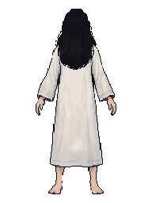
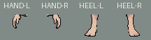
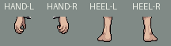
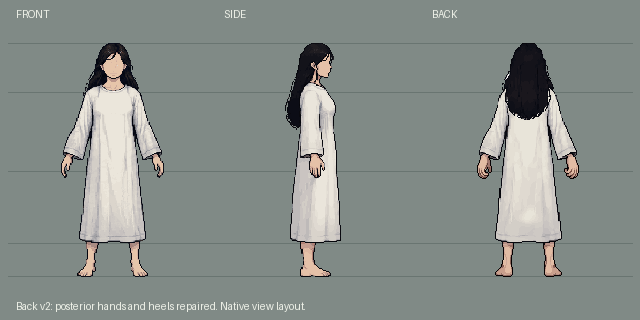
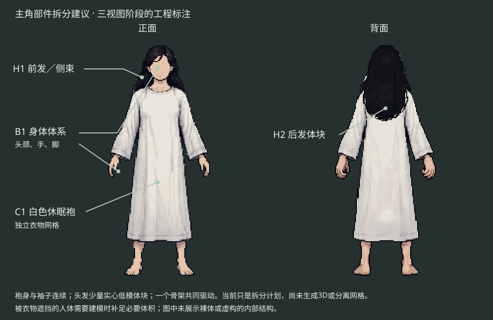

v1背面错误沿用正面手脚，用户指出后本轮仅开放两手、脚踝与脚跟四个区域给PixelLab重画，包含必要透明轮廓。正面、侧面和背面其余部分保持原像素。这里是待审候选，不是已批准3D资产。
来源与检查 · 完整三视图PNG · 更新部件图 · 背面分层Aseprite

这里只是原生裁片排版，完整姿态见上方。




身体、独立白袍、少量头发体块的拆分计划沿用；3D建模、分网格、绑定和Godot导入尚未开始。